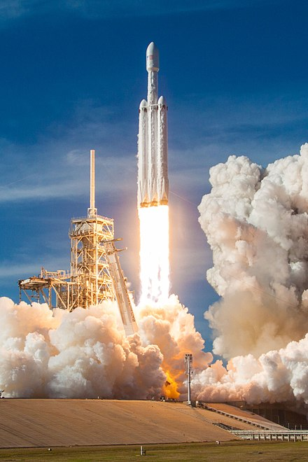

About the Falcon Heavy

Falcon Heavy is a partially reusable heavy-lift launch vehicle designed and manufactured by SpaceX. It is derived from the Falcon 9 vehicle and consists of a strengthened Falcon 9 first stage as the center core with two additional Falcon 9-like first stages as strap-on boosters.[8] Falcon Heavy has the highest payload capacity of any currently operational launch vehicle, and the third-highest capacity of any rocket ever to reach orbit, trailing the Saturn V and Energia.
SpaceX conducted Falcon Heavy's maiden launch on 6 February 2018, at 20:45 UTC.[4] The rocket carried a Tesla Roadster belonging to SpaceX founder Elon Musk, with a dummy dubbed "Starman" in the driver's seat, as a dummy payload.[9] The second Falcon Heavy launch occurred on 11 April 2019 and all three booster rockets successfully returned to Earth.[10] The third Falcon Heavy launch successfully occurred on 25 June 2019. Since then, Falcon Heavy has been certified for the National Security Space Launch (NSSL) program.[11]
Falcon Heavy was designed to be able to carry humans into space beyond low Earth orbit, although as of February 2018, SpaceX has confirmed that they will not transport people on Falcon Heavy, nor pursue the human-rating certification process to transport NASA astronauts.[12] Both Falcon Heavy and Falcon 9 will eventually be superseded by the in-development Starship launch system.[13]
Credit Wikipedia